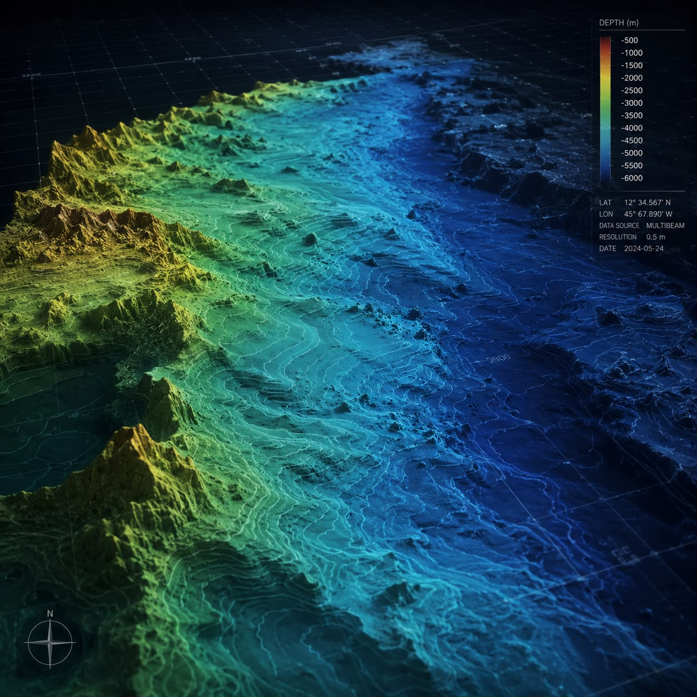
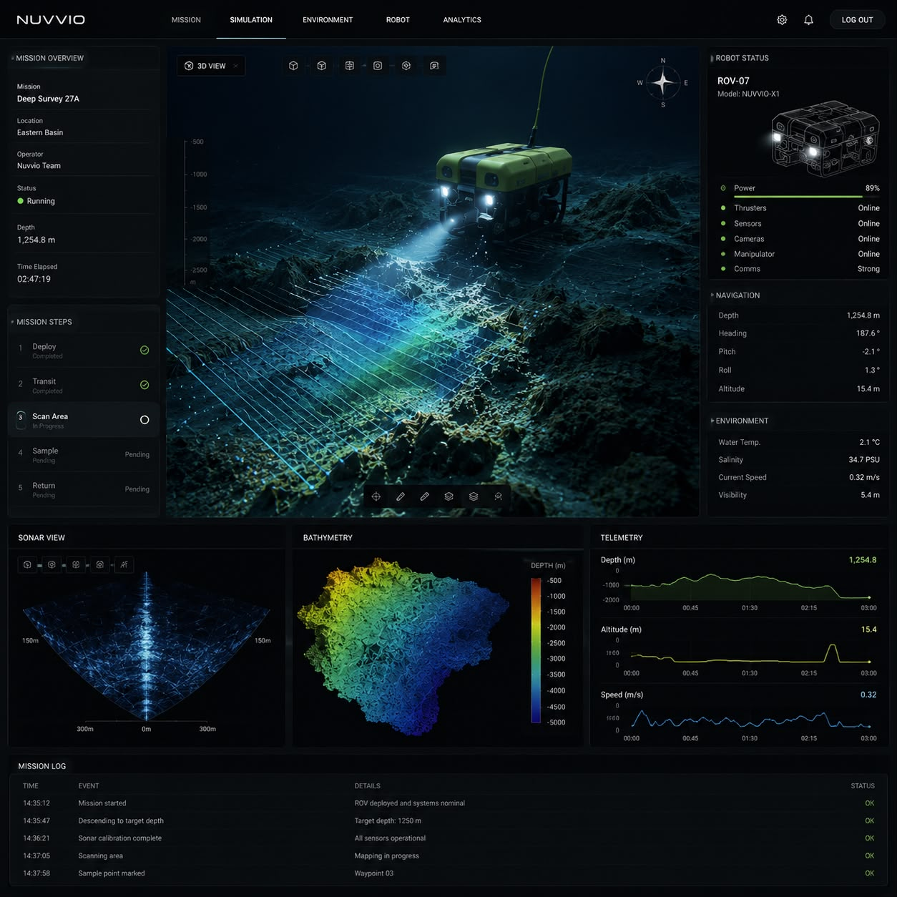

Nuvvio develops state-of-the-art computational frameworks to make marine intelligence more accessible. By bridging advanced satellite observation with physics-based underwater modeling, we extract high-precision hydrographic data to provide research institutions, environmental organizations, and enterprise operations with exact parameters for ocean mapping and exploration.
Advanced simulation suites enabling maritime organizations to build precise digital replicas of underwater environments. Model environmental resistance, currents, and salinity with scientific accuracy.
Leveraging state-of-the-art orbital sensor payloads and strategic aerospace alliances, including Varda Space, to execute rapid, multispectral water depth extraction across extreme environments.
Specialized computational frameworks designed to evaluate seabed composition, sediment dynamics, and benthic ecosystems to support marine conservation and responsible infrastructure planning.

By integrating multi-spectral satellite imagery with Nuvvio's proprietary bathymetric inversion algorithms, we bypass conventional maritime logistics barriers, delivering scientific-grade seabed morphology across remote global sectors.
Universities, conservation organizations, and public infrastructure planners face intense operational challenges in remote marine zones. Nuvvio supplies sovereign marine intelligence, baseline environmental mapping, and essential data pipelines to accelerate oceanographic research and protect marine biodiversity.
Mapping complex marine territories in extreme regions utilizing advanced spaceborne sensor arrays and physics-based light attenuation models.
Supplying scientists and governments with verifiable terrain data to monitor marine ecosystems, enforce ecological protection policies, and track habitat changes.
Equipping public sector entities with high-resolution hydrographic spatial layers to govern coastal zones, understand current patterns, and manage national waters effectively.
Utilizing high-performance telemetry from strategic space partners to secure continuous, high-fidelity spatial data feeds for critical oceanographic research.
Delivering computational seabed and wave data to assist authorities in studying coastal erosion, hazard management, and the impacts of sea-level rise.
Providing precise seabed mapping required for the safe, ecologically conscious development of ports and renewable energy installations.
Understanding the deep ocean requires models that accurately reflect reality. Our software engine processes environmental variables—such as localized water currents, optical attenuation, density gradients, and seabed friction—creating highly accurate virtual environments.
Scientists and enterprise engineers utilize Nuvvio's digital twins to simulate complex marine scenarios, allowing for extensive testing of submersible technologies and environmental impact studies prior to any physical deployment.
Built on institutional frameworks optimized for geospatial intelligence and real-time physics calculations.

A proprietary computational framework designed to scale from satellite observation to deep-sea analysis.
Capturing multi-spectral optical data from leading Earth-observation constellations.
Processing optical reflectance into high-resolution, institutional depth and coastal models.
Evaluating seabed composition, geological strata, and localized benthic environments.
Visualizing and simulating the physical marine environment for scientific research and enterprise planning.
We do not speculate; we quantify. By combining extensive space-based assets with proprietary AI modeling, Nuvvio sets a new benchmark for accessible, verifiable marine intelligence.
High-resolution spatial databases supporting long-term oceanographic and climatic studies.
Empirical data mapping for the preservation of coral reefs, kelp forests, and vulnerable ecosystems.
Strategic maritime domain awareness, hydrographic mapping, and intelligent coastal governance.
Precise bathymetry and seabed mechanics for responsible wind turbine placement and routing.
Engineering data solutions for safe fiber-optic cable routing and port construction analysis.
Proprietary datasets integrated directly into enterprise engineering pipelines and academic GIS software.
The ocean is one of Earth's least understood ecosystems, yet it is fundamental to the future of our planet.
At Nuvvio, we develop technologies that make marine intelligence more accessible through artificial intelligence, satellite observation, and digital twins. Our mission is to help governments, universities, research institutions, conservation organizations, and responsible industries better understand the ocean while enabling scientific exploration and collaboration.
By making advanced marine technologies more accessible, we aim to accelerate research, deepen our understanding of underwater ecosystems, and contribute to the protection of marine biodiversity—helping preserve the ocean for future generations.